Home Credit Default Risk - Un Enfoque Multivariado
Authors
Gerardo Guerrero
Juan Pablo Cordero
Jerónimo Deli
Romain S
Published
September 12, 2025
1 Introducción
1.1 Contexto del Problema
El acceso al crédito es un pilar fundamental para el desarrollo económico individual y colectivo. Sin embargo, las instituciones financieras enfrentan el desafío constante de evaluar el riesgo de incumplimiento (default) de sus clientes. Una evaluación inadecuada puede resultar en pérdidas significativas para la institución o, por otro lado, en la exclusión financiera de personas que podrían cumplir con sus obligaciones.
Home Credit Group es una compañía de servicios financieros enfocada en préstamos a poblaciones no bancarizadas o con historial crediticio limitado. El problema que abordamos es la predicción del riesgo de impago utilizando técnicas estadísticas multivariadas, con el objetivo de:
Identificar clientes con alta probabilidad de incumplimiento antes de otorgar el crédito
Comprender los factores que influyen en el impago para diseñar políticas de mitigación
Equilibrar la inclusión financiera con la gestión del riesgo
Desde la perspectiva de la gestión de riesgos, el objetivo no es únicamente predecir quién hará o no hará default, sino estimar probabilidades que permitan tomar decisiones bajo restricciones de capital, regulación y apetito de riesgo. En este sentido, un modelo de probabilidad de impago se convierte en una herramienta cuantitativa clave para:
Definir políticas de originación (qué tipo de clientes aceptar o rechazar).
Ajustar límites de crédito y condiciones como plazo y tasa.
Alimentar modelos de pérdida esperada (PD × LGD × EAD) y de provisiones regulatorias.
Diseñar estrategias de seguimiento temprano (early warning) y cobranza preventiva.
A lo largo del reporte, nuestro énfasis estará en balancear el desempeño estadístico del modelo con su utilidad práctica en la toma de decisiones crediticias.
1.2 Marco Conceptual: El Grafo Causal del Impago
Antes de desarrollar nuestros modelos predictivos, construimos un grafo causal que representa nuestra comprensión teórica del fenómeno. Este ejercicio de pensamiento causal nos permite identificar las variables relevantes y sus relaciones, fundamentando así nuestro enfoque analítico.
1.2.1 Modelo Causal Simplificado
Grafo Causal Simple
El impago crediticio puede originarse por dos vías principales:
Fraude: Cuando el cliente nunca tuvo intención de pagar
Capacidad de Pago: Cuando el cliente no puede cumplir con sus obligaciones debido a restricciones económicas
1.2.2 Modelo Causal Detallado
Grafo Causal Detallado
El grafo causal detallado nos muestra las relaciones entre las distintas variables que capturamos en los datos y cómo estas se relacionan con los dos mecanismos principales de impago.
El grafo causal detallado sirve como una capa intermedia entre el conocimiento de negocio y la modelación estadística. Más allá de listar variables, nos obliga a responder preguntas como:
¿Qué mecanismos generan realmente el impago (fraude vs. incapacidad de pago)?
¿Qué variables son se correlacionan con impago?
¿Qué información proviene del cliente, del buró u otras fuentes externas?
En la práctica, este grafo:
Guía la ingeniería de variables: por ejemplo, agrupar información de buró en indicadores de mora histórica, carga de deuda y número de créditos activos.
Ayuda a interpretar el modelo a posteriori: si una variable aparece como importante en el modelo, podemos ubicarla en el grafo y entender si actúa como proxy de fraude, de capacidad de pago o de algún canal más específico.
Aunque no construimos un modelo causal formal (con identificación y estimación de efectos causales), este esquema nos permite mantener coherencia entre la construcción de features y la narrativa económica del impago.
1.3 Hipótesis de Investigación
Con base en el marco causal, formulamos las siguientes hipótesis que guiarán nuestro análisis:
Hipótesis
Variable Proxy
Relación Esperada
Préstamos más altos incrementan la probabilidad de impago
AMT_CREDIT
Positiva
Menor edad y sin historial crediticio aumenta el riesgo
EDAD_ANOS, ES_PRIMER_CREDITO
Negativa, Positiva
Mal historial crediticio incrementa el riesgo
EXT_SOURCE_1/2/3, SCORE_PROMEDIO
Negativa
Menor ingreso incrementa el riesgo
AMT_INCOME_TOTAL, INGRESO_PER_CAPITA
Negativa
Mayor carga de gastos incrementa el riesgo
CNT_CHILDREN, CNT_FAM_MEMBERS
Positiva
Mayor deuda acumulada incrementa el riesgo
TOTAL_DEUDA_ACTUAL, CREDITOS_ACTIVOS
Positiva
Menos activos incrementan el riesgo
NUM_ACTIVOS, FLAG_OWN_CAR, FLAG_OWN_REALTY
Negativa
Condiciones crediticias adversas aumentan el riesgo
TASA_INTERES_PROMEDIO, PLAZO_PROMEDIO
Positiva
1.4 Preguntas de Investigación
¿Cuáles son las variables con mayor poder predictivo para identificar clientes en riesgo de impago?
¿Qué modelo (Regresión Logística, Random Forest o XGBoost) ofrece el mejor balance entre interpretabilidad y poder predictivo?
2 Metodología y Datos
2.1 Descripción del Dataset
El conjunto de datos proviene de la competencia Home Credit Default Risk de Kaggle. La estructura de datos incluye múltiples tablas relacionadas:
dataset-description
Una característica importante de este dataset es su estructura relacional. La tabla application_train contiene la observación “principal” (cada fila es una solicitud de crédito), mientras que el resto de tablas describen el historial del cliente en distintas dimensiones:
bureau y bureau_balance capturan el comportamiento del cliente en otras instituciones financieras.
previous_application, installments_payments y credit_card_balance describen el ciclo de vida de créditos previos con Home Credit (originación, pagos, atrasos, etc.).
POS_CASH_balance complementa la información con productos tipo POS / cash loans.
Esto implica dos retos principales:
Integración de información: es necesario definir una estrategia para pasar de tablas transaccionales (múltiples registros por cliente) a variables agregadas por SK_ID_CURR.
Escalabilidad computacional: algunas tablas tienen millones de filas; decisiones de agregación, muestreo y tipos de datos afectan directamente el tiempo de cómputo y el uso de memoria.
La ingeniería de variables que describimos en la siguiente sección responde precisamente a estos retos.
La lógica de la ingeniería de variables que implementamos se puede resumir en cuatro bloques principales:
Perfil socio-demográfico y capacidad de pago
A partir de application_train construimos indicadores de edad (EDAD_ANOS), estructura familiar (CNT_CHILDREN, CNT_FAM_MEMBERS) e ingresos (AMT_INCOME_TOTAL, INGRESO_PER_CAPITA). Estos proxies buscan capturar la capacidad de generar flujo de efectivo para servir la deuda.
Carga de deuda y uso del crédito
De las tablas de buró (bureau, bureau_balance) extraemos el nivel de crédito actual (TOTAL_DEUDA_ACTUAL, TOTAL_CREDITO_OTORGADO), el número de créditos activos (CREDITOS_ACTIVOS) y la historia de mora (PCT_MESES_MORA, CREDITOS_CON_IMPAGO). Estas variables resumen el apetito de endeudamiento y el cumplimiento pasado del cliente.
Condiciones crediticias históricas
De previous_application construimos variables como TASA_INTERES_PROMEDIO, PLAZO_PROMEDIO y TOTAL_CREDITO_HISTORICO. El objetivo es capturar el tipo de condiciones bajo las cuales el cliente ha tomado crédito en el pasado, lo cual puede estar correlacionado con su riesgo (p.ej., tasas más altas pueden ser reflejo de mayor riesgo percibido).
Comportamiento de pago reciente
A partir de installments_payments y credit_card_balance construimos ratios como RATIO_PAGO_CUOTA y RATIO_PAGO_MINIMO_TC, que miden qué tan sistemáticamente el cliente paga sus cuotas completas o sólo mínimos. Estas son variables de conducta reciente, muy relevantes para anticipar problemas de liquidez.
En conjunto, el dataset final combina información estática (perfil del cliente al momento de la solicitud) con información histórica dinámica (trayectoria de uso y pago de crédito), alineado con el grafo causal propuesto.
Una observación importante es que muchas de las variables nuevas presentan valores faltantes (NaN). Esto puede deberse a que ciertos clientes no tienen historial en buró o no han tenido créditos previos, lo que limita la información disponible para su análisis.
3.2 Distribución de la Variable Objetivo
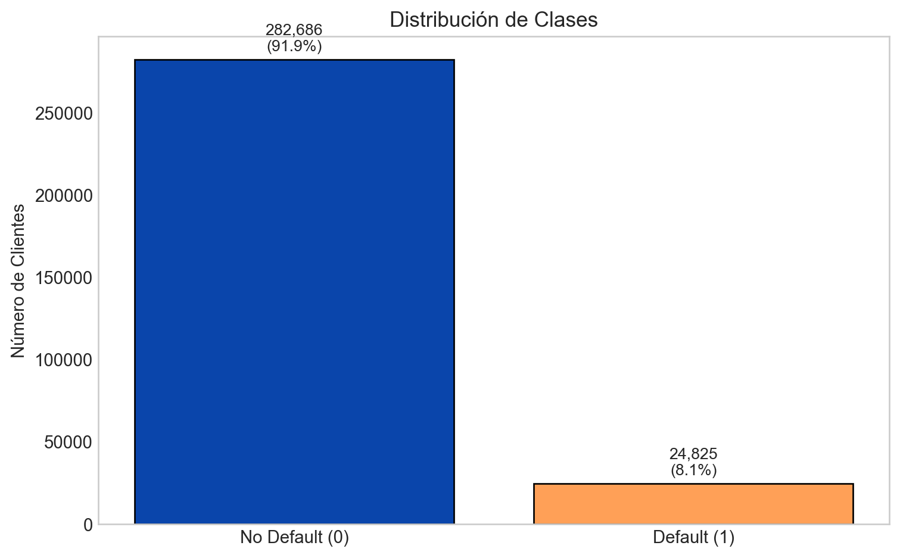
Figure 1: Distribución de la variable TARGET (desbalance de clases)
La tasa de default observada (~8%) es consistente con portafolios de consumo relativamente amplios y diversificados. Desde el punto de vista de modelación, este desbalance de clases implica que:
Un modelo que ignore la clase minoritaria puede mostrar métricas aparentemente buenas (p. ej. alta accuracy), pero ser inútil para detectar clientes realmente riesgosos.
La función de pérdida “natural” del modelo está desbalanceada: equivocarse en un cliente “default” (falso negativo) es mucho más costoso que equivocarse en un “no default”.
Por ello, adoptamos dos estrategias complementarias:
Ajustar el modelo con pesos de clase (class_weight='balanced' o scale_pos_weight), de modo que los errores en la clase positiva tengan mayor penalización.
Enfocarnos en métricas más sensibles al desbalance, como PR-AUC (Average Precision), Recall y análisis por deciles de score, en lugar de depender únicamente de ROC-AUC o accuracy.
3.3 Análisis de Correlaciones
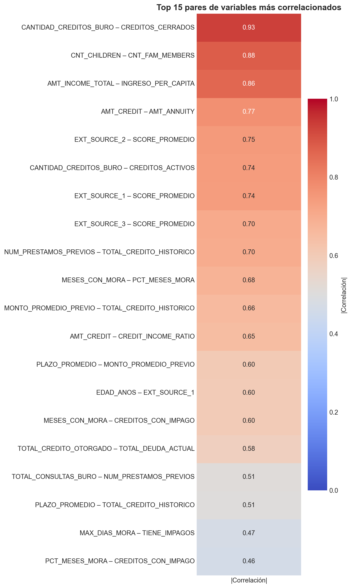
Figure 2: Heatmap de correlaciones entre variables numéricas
El análisis de correlaciones muestra que muchas variables están fuertemente relacionadas entre sí, especialmente:
Montos monetarios derivados de la misma base (AMT_CREDIT, AMT_ANNUITY, AMT_GOODS_PRICE, etc.).
Scores externos (EXT_SOURCE_1/2/3) que, aunque provienen de fuentes distintas, tienden a moverse juntos.
En modelos lineales como la regresión logística, la multicolinealidad puede inflar varianzas de los coeficientes y dificultar la interpretación. Aunque los modelos de árboles son más robustos a este problema, mantener demasiadas variables redundantes puede:
Introducir ruido innecesario.
Aumentar el costo computacional.
Complicar la comunicación de resultados.
Por ello, en la etapa de selección de variables optamos por:
Conservar métricas sintéticas más interpretables (p.ej. SCORE_PROMEDIO, CREDIT_INCOME_RATIO).
Eliminar componentes redundantes (p.ej. EXT_SOURCE_1/2/3 por separado, o montos crudos que ya están en ratios).
Mantener un subconjunto manejable de variables con significado económico claro, manteniendo el foco en calidad sobre cantidad de features.
3.4 Selección de Variables
Eliminamos variables redundantes para reducir la multicolinealidad:
Ver código de selección de variables
# Drop de variables redundantes/derivadasdf = df.drop(columns=[# Edad'DAYS_BIRTH',# Montos base'AMT_CREDIT','AMT_INCOME_TOTAL','AMT_ANNUITY',# Scores individuales'EXT_SOURCE_1','EXT_SOURCE_2','EXT_SOURCE_3',# Familia'CNT_FAM_MEMBERS',# Activos'FLAG_OWN_CAR','FLAG_OWN_REALTY',# Componentes de ratios'MESES_CON_MORA',# Variables binarias derivadas'TIENE_IMPAGOS','ES_PRIMER_CREDITO',# Créditos buró'CANTIDAD_CREDITOS_BURO'])print(f"Variables restantes: {df.shape[1]}")print(f"Observaciones: {df.shape[0]:,}")print(f"\nVariables en el modelo final:")for i, col inenumerate(df.columns, 1):if col notin ['SK_ID_CURR', 'TARGET']:print(f" {i-2}. {col}")
La regresión logística es un modelo de clasificación que estima la probabilidad de que una observación pertenezca a una clase particular. El modelo utiliza la función sigmoide (o logística) para transformar una combinación lineal de las variables predictoras en una probabilidad:
Table 2: Métricas del modelo de Regresión Logística
Métrica
Test
ROC-AUC
0.7337
Average Precision
0.2109
Accuracy
0.6841
4.3.1 Matriz de Confusión
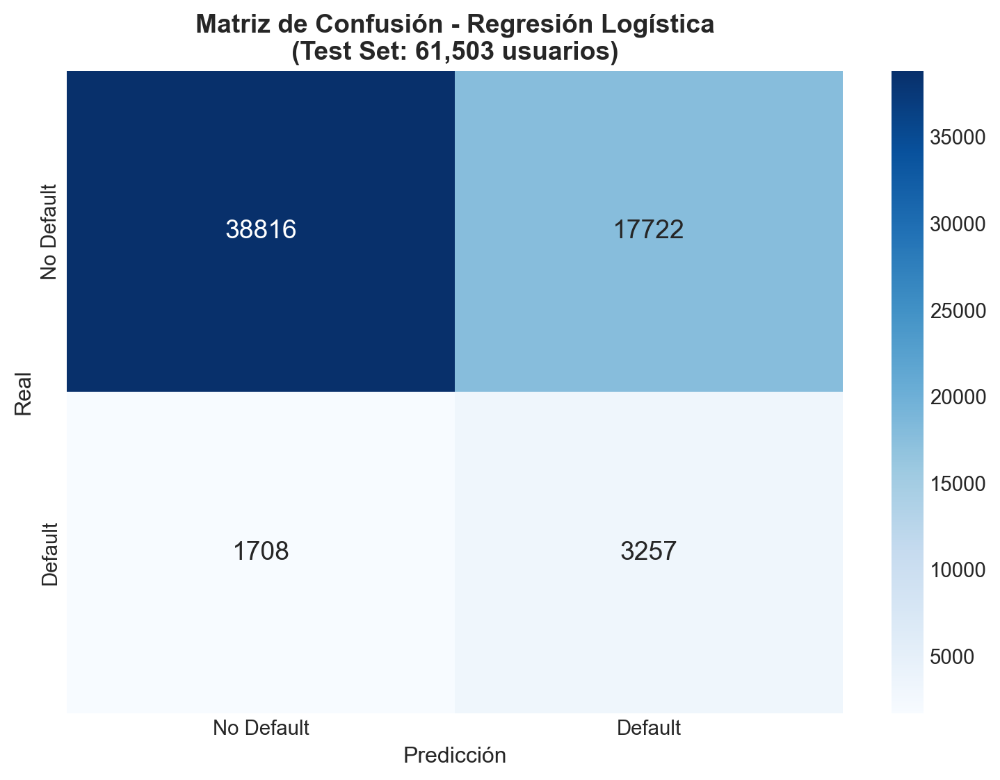
Figure 3: Matriz de Confusión - Regresión Logística (Test Set)
Interpretación:
Verdaderos Negativos (TN): 38,816 - Predijo 'Pago' y si pagó
Falsos Positivos (FP): 17,722 - Predijo 'Default' pero pagó
Falsos Negativos (FN): 1,708 - Predijo 'Pago' pero hizo default
Verdaderos Positivos (TP): 3,257 - Predijo 'Default' y si hizo default
4.3.2 Importancia de Variables
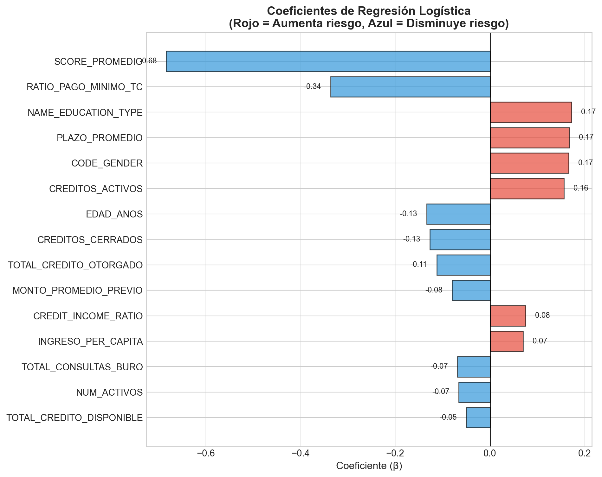
Figure 4: Coeficientes de Regresión Logística (Top 15 variables)
4.3.3 Curvas ROC y Precision-Recall
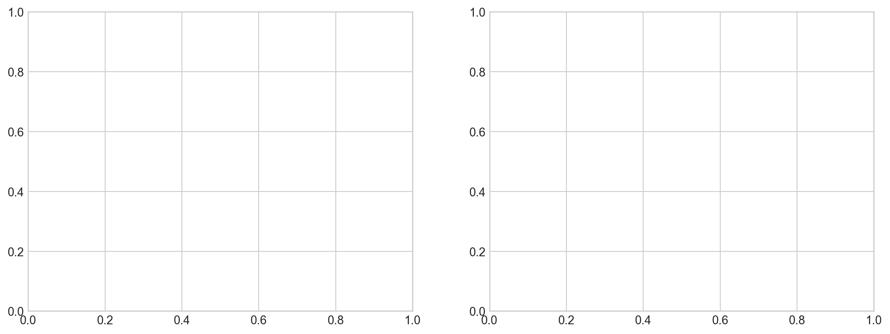
(a) Curvas ROC y Precision-Recall - Regresión Logística
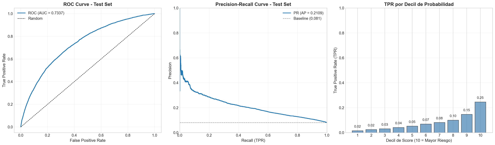
(b)
Figure 5
En el caso de la regresión logística, el ROC-AUC y el Average Precision en el set de prueba indican que el modelo logra discriminar razonablemente bien entre clientes que harán default y aquellos que no, aun en presencia de fuerte desbalance. El hecho de que las métricas de entrenamiento y prueba sean cercanas sugiere que el modelo no presenta overfitting severo, lo cual es coherente con la regularización L2 y la relativa parsimonia del conjunto de variables.
Dado que se trata de un modelo lineal, la información contenida en los coeficientes se puede traducir a insights de negocio:
Coeficientes positivos indican variables que incrementan el riesgo de impago (por ejemplo, mayores ratios de deuda o mayor proporción de meses con mora).
Coeficientes negativos corresponden a variables que reducen el riesgo (p. ej. mayores ingresos per cápita o mejores scores externos).
Este modelo, aun cuando no es el de mejor desempeño, proporciona una línea base interpretable contra la cual podemos comparar modelos más complejos.
La matriz de confusión permite visualizar con claridad los errores de clasificación:
Los falsos negativos (FN) corresponden a clientes que el modelo considera “buenos” pero que terminan en default; son los más costosos desde el punto de vista del riesgo.
Los falsos positivos (FP) son clientes rechazados o tratados como de alto riesgo, aunque finalmente hubieran pagado; reflejan un costo de oportunidad y posible pérdida de negocio.
El umbral estándar de 0.5 utilizado para convertir probabilidades en clases puede no ser el óptimo desde una perspectiva de negocio. En una implementación real, sería deseable ajustar el umbral en función de:
El costo relativo de FN vs FP.
Restricciones de capital y objetivos de crecimiento de cartera.
Políticas internas de riesgo y regulación.
5 Random Forest
5.1 Descripción del Modelo
Random Forest es un algoritmo de ensemble learning basado en árboles de decisión. El modelo construye múltiples árboles utilizando:
Bagging (Bootstrap Aggregating): Cada árbol se entrena con una muestra bootstrap del conjunto de datos
Selección aleatoria de features: En cada split, solo se considera un subconjunto aleatorio de variables
Para clasificación, la predicción final se obtiene por votación mayoritaria:
Donde \(p_{tk}\) es la proporción de observaciones de clase \(k\) en el nodo \(t\).
5.2 Entrenamiento del Modelo
Ver código del modelo Random Forest
# ConfiguraciónN_ESTIMATORS =100MAX_DEPTH =15MIN_SAMPLES_SPLIT =10MIN_SAMPLES_LEAF =5print("="*80)print("MODELO DE RANDOM FOREST - HOME CREDIT DEFAULT RISK")print("="*80)# Preparar datos (reusar los mismos splits)X_rf = df.drop(['SK_ID_CURR', 'TARGET'], axis=1).copy()y_rf = df['TARGET'].copy()numeric_vars_rf = X_rf.select_dtypes(include=[np.number]).columns.tolist()categorical_vars_rf = X_rf.select_dtypes(include=['object']).columns.tolist()# Imputaciónfor col in numeric_vars_rf:if X_rf[col].isnull().sum() >0: X_rf[col].fillna(X_rf[col].median(), inplace=True)for col in categorical_vars_rf:if X_rf[col].isnull().sum() >0: X_rf[col].fillna(X_rf[col].mode()[0], inplace=True)# Codificaciónlabel_encoders_rf = {}for col in categorical_vars_rf: le = LabelEncoder() X_rf[col] = le.fit_transform(X_rf[col].astype(str)) label_encoders_rf[col] = le# DivisiónX_train_rf, X_test_rf, y_train_rf, y_test_rf = train_test_split( X_rf, y_rf, test_size=TEST_SIZE, random_state=RANDOM_STATE, stratify=y_rf)print(f"\nTrain set: {X_train_rf.shape[0]:,} usuarios")print(f"Test set: {X_test_rf.shape[0]:,} usuarios")# Entrenamientoprint("\nEntrenando Random Forest...")model_rf = RandomForestClassifier( n_estimators=N_ESTIMATORS, max_depth=MAX_DEPTH, min_samples_split=MIN_SAMPLES_SPLIT, min_samples_leaf=MIN_SAMPLES_LEAF, class_weight='balanced', random_state=RANDOM_STATE, n_jobs=-1)model_rf.fit(X_train_rf, y_train_rf)print("✓ Modelo entrenado exitosamente")print(f" Número de árboles: {model_rf.n_estimators}")print(f" Profundidad máxima: {model_rf.max_depth}")# Validación Cruzadaprint(f"\nValidacion Cruzada ({CV_FOLDS}-fold)...")cv_scores_rf = cross_val_score( model_rf, X_train_rf, y_train_rf, cv=CV_FOLDS, scoring='roc_auc', n_jobs=-1)print(f"ROC-AUC por fold: {cv_scores_rf}")print(f"Media: {cv_scores_rf.mean():.4f} (+/- {cv_scores_rf.std():.4f})")# Prediccionesy_train_pred_rf = model_rf.predict(X_train_rf)y_train_proba_rf = model_rf.predict_proba(X_train_rf)[:, 1]y_test_pred_rf = model_rf.predict(X_test_rf)y_test_proba_rf = model_rf.predict_proba(X_test_rf)[:, 1]
================================================================================
MODELO DE RANDOM FOREST - HOME CREDIT DEFAULT RISK
================================================================================
Train set: 246,008 usuarios
Test set: 61,503 usuarios
Entrenando Random Forest...
✓ Modelo entrenado exitosamente
Número de árboles: 100
Profundidad máxima: 15
Validacion Cruzada (5-fold)...
ROC-AUC por fold: [0.7399194 0.72517727 0.73832354 0.73798331 0.74308408]
Media: 0.7369 (+/- 0.0061)
5.3 Resultados del Modelo
Table 3: Métricas del modelo Random Forest
Métrica
Test
ROC-AUC
0.739559
Average Precision
0.215535
Accuracy
0.816968
Overfitting (Gap)
0.172557
5.3.1 Matriz de Confusión
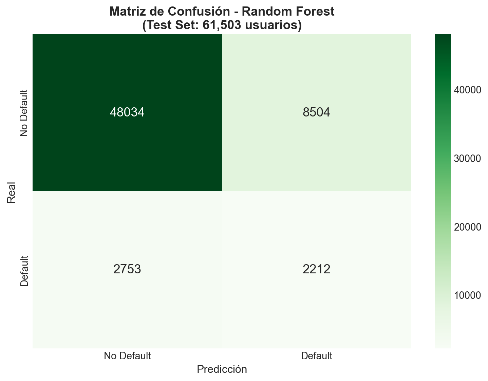
Figure 6: Matriz de Confusión - Random Forest (Test Set)
5.3.2 Importancia de Variables
✓ SCORE_PROMEDIO domina con 32.0% de la importancia total
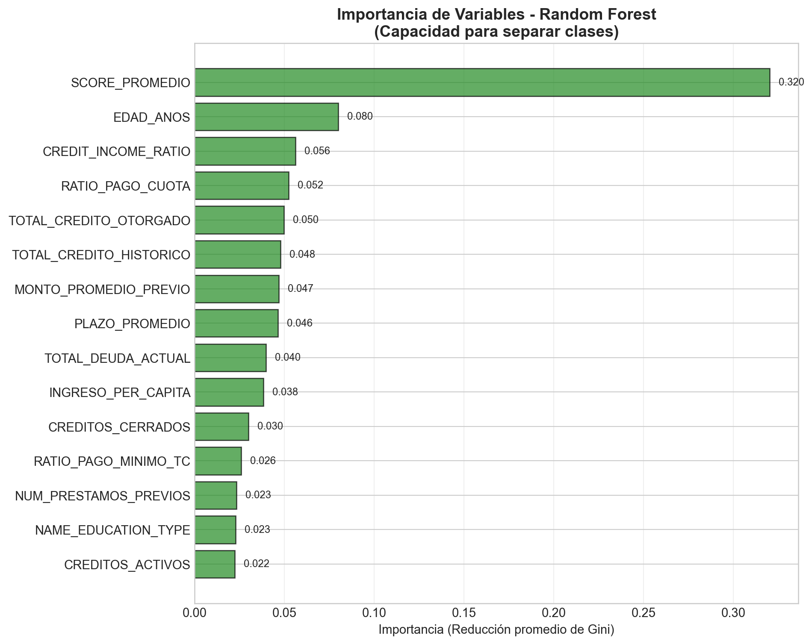
(a) Importancia de variables en Random Forest (Gini Importance)
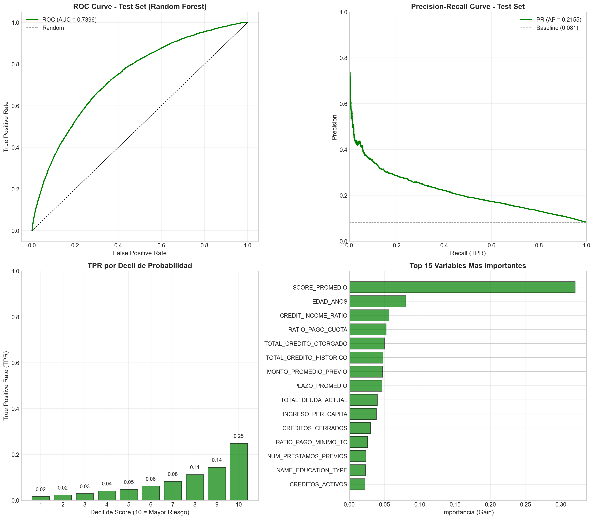
(b)
Figure 7
6 XGBoost
6.1 Descripción del Modelo
XGBoost (Extreme Gradient Boosting) es un algoritmo de boosting que construye árboles de decisión de manera secuencial. A diferencia de Random Forest que construye árboles en paralelo, XGBoost:
Entrena árboles secuencialmente: Cada árbol corrige los errores del anterior
Utiliza gradient boosting: Optimiza una función de pérdida usando gradiente descendente
Incluye regularización: Penaliza la complejidad del modelo para prevenir overfitting
6.1.1 Mecanismo de Boosting
El modelo final es una suma ponderada de árboles:
\[
\hat{y}_i = \sum_{k=1}^{K} f_k(x_i)
\]
Donde cada árbol \(f_k\) se entrena para minimizar:
La regularización \(\Omega(f_k)\) incluye: - L1 (alpha): Regularización de pesos - L2 (lambda): Regularización de scores de hojas - gamma: Penalización por complejidad del árbol
6.1.2 Learning Rate (η)
El learning rate controla la contribución de cada árbol:
Figure 8: Matriz de Confusión - XGBoost (Test Set)
6.3.2 Importancia de Variables
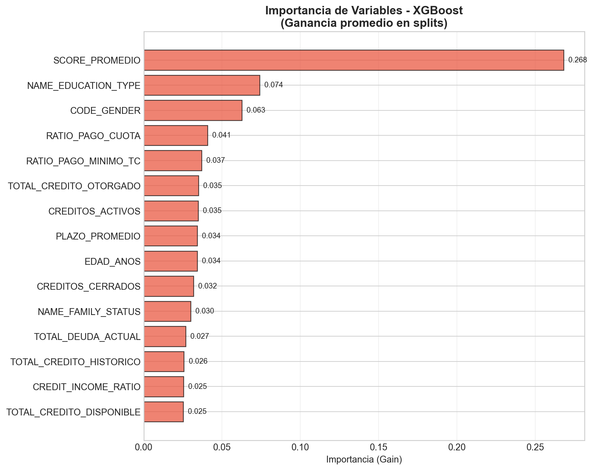
(a) Importancia de variables en XGBoost (Gain)
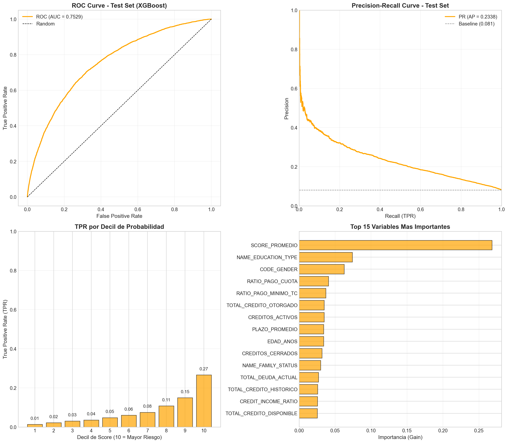
(b)
Figure 9
Tanto Random Forest como XGBoost logran mejorar las métricas de desempeño respecto a la regresión logística, lo cual era esperable dado que:
Capturan relaciones no lineales entre las variables.
Modelan de manera más flexible interacciones entre features (por ejemplo, combinaciones de score, carga de deuda y edad).
En el caso de Random Forest, la diferencia entre el desempeño en entrenamiento y prueba es mayor, lo que indica cierto overfitting inherente al modelo. XGBoost, por su parte, muestra un mejor balance entre ajuste y generalización, gracias a:
La regularización explícita en la función de pérdida.
El uso de un learning rate controlado.
La posibilidad de ajustar hiperparámetros finos (profundidad, min_child_weight, subsample, etc.).
En resumen, mientras que Random Forest es un buen baseline no lineal relativamente fácil de configurar, XGBoost ofrece un mayor potencial de performance a cambio de mayor complejidad de tuning. Es interesante notar que, pese a las diferencias de arquitectura, los tres modelos coinciden en resaltar un conjunto relativamente reducido de variables como las más importantes:
SCORE_PROMEDIO y otras variables relacionadas con el historial crediticio externo.
Ratios que combinan deuda e ingreso (CREDIT_INCOME_RATIO, RATIO_PAGO_CUOTA).
Indicadores de comportamiento de pago (PCT_MESES_MORA, CREDITOS_CON_IMPAGO).
Esta coincidencia refuerza la idea de que el riesgo de impago está fuertemente determinado por una combinación de historial de cumplimiento y capacidad de pago actual, en línea con la narrativa del grafo causal.
7 Comparación de Modelos
7.1 Métricas Globales
Table 5: Resumen comparativo de todos los modelos
Métrica
Regresión Logística
Random Forest
XGBoost
ROC-AUC (Test)
0.7337
0.7396
0.7529
Average Precision (Test)
0.2109
0.2155
0.2338
Accuracy (Test)
0.6841
0.8170
0.7070
ROC-AUC (Train)
0.7329
0.9121
0.7955
Overfitting (Gap)
0.0009
0.1726
0.0426
7.2 Curvas ROC Comparativas
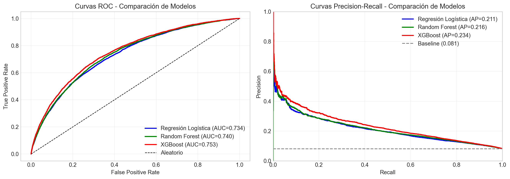
Figure 10: Comparación de curvas ROC entre modelos
7.3 Matrices de Confusión Comparativas
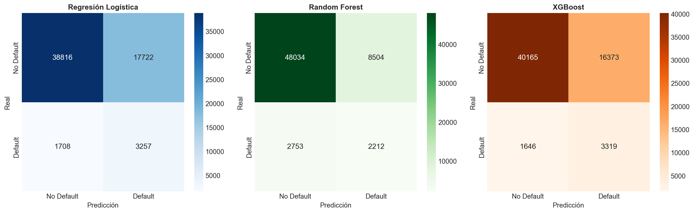
Figure 11: Matrices de confusión de los tres modelos (Test Set)
Desde una perspectiva práctica, la elección del modelo no debería basarse únicamente en el valor numérico de AUC o AP, sino también en:
Estabilidad temporal: qué tan robusto es el modelo frente a cambios en la distribución de clientes y condiciones macroeconómicas.
Implementabilidad: facilidad de desplegar el modelo en sistemas productivos, tiempos de scoring, dependencia de librerías, etc.
Gobernanza y explicabilidad: requisitos regulatorios o internos que demanden cierta transparencia en la toma de decisiones.
En ese sentido:
La regresión logística es atractiva para documentación, auditoría y explicación a no-técnicos.
Random Forest ofrece una mejora de desempeño, pero puede ser más difícil de explicar y controlar si se usan muchos árboles profundos.
XGBoost se perfila como el candidato más competitivo para producción, siempre que se acompañe de herramientas de explicabilidad que permitan entender contribuciones a nivel cliente.
8 Conclusiones
8.1 Hallazgos Principales
8.1.1 1. El Score Crediticio es el Predictor Dominante
En los tres modelos, SCORE_PROMEDIO emerge como la variable más importante. Esto confirma que los scores de fuentes externas capturan información valiosa sobre el riesgo crediticio.
8.1.3 3. Trade-off entre Interpretabilidad y Rendimiento
Regresión Logística: Mayor interpretabilidad (coeficientes directos), menor rendimiento
XGBoost: Mejor rendimiento, pero menor interpretabilidad
Random Forest: Balance intermedio, pero con mayor overfitting
8.2 Ventajas y Desventajas de Cada Modelo
Modelo
Ventajas
Desventajas
Regresión Logística
Alta interpretabilidad, Sin overfitting, Rápido entrenamiento
Asume linealidad, Menor AUC
Random Forest
Captura interacciones, Robusto a outliers
Alto overfitting, Caja negra
XGBoost
Mejor AUC, Bajo overfitting
Caja negra, Requiere tuning
8.3 Recomendación Final
8.3.1 Para Producción
Recomendamos implementar XGBoost como modelo principal por:
Mejor rendimiento predictivo
Buen balance recall-precision
Bajo overfitting
Robustez ante desbalance de clases
8.3.2 Validación de Hipótesis
Hipótesis
Resultado
Evidencia
Menor score crediticio → Mayor riesgo
✓ Confirmada
Variable #1 en todos los modelos
Menor edad → Mayor riesgo
✓ Confirmada
Coeficiente negativo en LR
Mayor historial de mora → Mayor riesgo
✓ Confirmada
PCT_MESES_MORA significativo
Más créditos activos → Mayor riesgo
✓ Confirmada
Coeficiente positivo en LR
8.4 Limitaciones y Trabajo Futuro
Aunque los resultados son prometedores, nuestro análisis presenta algunas limitaciones que abren la puerta a extensiones interesantes:
Costos y beneficios explícitos: no incorporamos un análisis formal de costos de FN/FP ni un modelo de utilidad esperada. Incluir una matriz de costos permitiría optimizar directamente decisiones de originación en lugar de solo métricas estadísticas.
Drift y monitoreo: en operación real, es fundamental establecer un esquema de monitoreo de drift de datos y performance para detectar deterioros en la capacidad predictiva del modelo.
A pesar de estas limitaciones, el ejercicio demuestra cómo, a partir de un marco causal razonable y de un proceso de ingeniería de variables bien estructurado, es posible construir modelos de riesgo de crédito que sean simultáneamente útiles para el negocio y rigorosos desde el punto de vista estadístico.
9 Referencias
Home Credit Group. (2018). Home Credit Default Risk. Kaggle Competition. https://www.kaggle.com/competitions/home-credit-default-risk
Breiman, L. (2001). Random Forests. Machine Learning, 45(1), 5-32.
Chen, T., & Guestrin, C. (2016). XGBoost: A Scalable Tree Boosting System. Proceedings of the 22nd ACM SIGKDD.
Hosmer, D. W., Lemeshow, S., & Sturdivant, R. X. (2013). Applied Logistic Regression (3rd ed.). Wiley.
James, G., Witten, D., Hastie, T., & Tibshirani, R. (2021). An Introduction to Statistical Learning (2nd ed.). Springer.
Battagliola, M. L. (2025). Guía para la Elaboración del Proyecto Final. ITAM - Estadística Aplicada III.